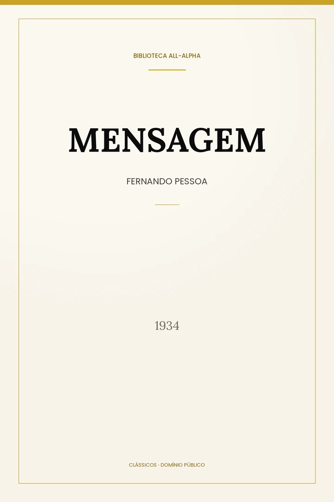

Clássicos · Poesia · Domínio público
Mensagem
Quarenta e quatro poemas em três partes
O único livro que Pessoa publicou em vida. Um brasão, um mar e um encoberto: a história de um povo contada como destino, e a pergunta que fica — se valeu a pena.
Antes de decidires
O' mar salgado, quanto do teu sal
São lagrimas de Portugal!
Por te cruzarmos, quantas mães choraram,
Quantos filhos em vão resaram!
Do livro, Mar Portuguez, poema X
Leitura online
Começa aqui.
O leitor incorporado pode variar conforme o navegador. No iPhone, usa “Abrir PDF em ecrã inteiro” se preferires a visualização nativa.
Se o PDF não aparecer, abre a edição directamente.